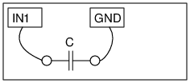

Connect the capacitors one by one from IN1 to Ground( any black terminal)
Measure the value by clicking on "Capacitance on IN1"
The terminal IN1 measures capacitance by charging it with a constant current for a fixed duration. The charge is the product of the current and the time interval.
The voltage across the capacitor is measured and C is calculated from I x t /V.
You should not touch the capacitor while measuring because it causes leakage current.